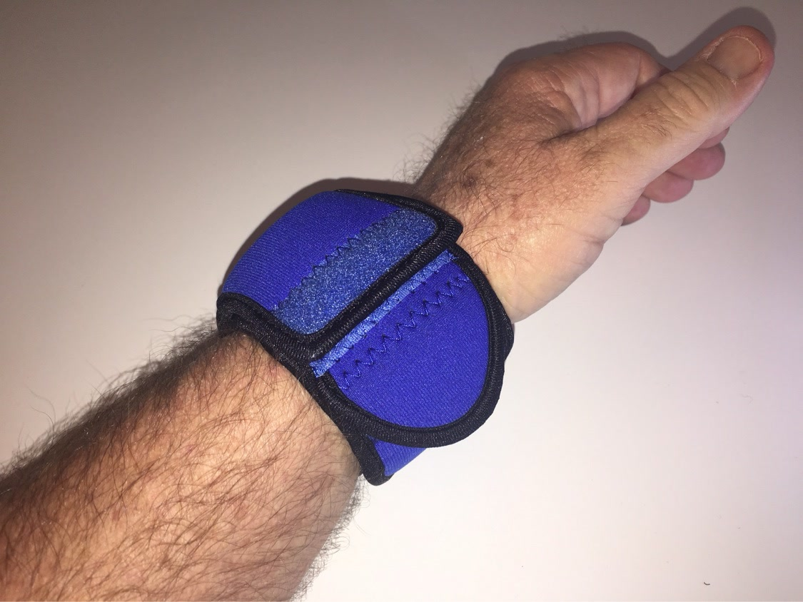

From the blog
Nautical Blue: Made for Life on the Water
November 3, 2026

Water is hard on a watch even when you never drop it in the lake. Dock boards, boat rails, wet rope, and sandy hands all leave marks over time. A watch you love should be able to go where you go, not stay home in a drawer while you enjoy the water. That is why Nautical Blue is a favorite for boat days, fishing trips, and lake weekends. It looks sharp, it is easy to spot on a crowded dock, and the neoprene sleeve helps guard your watch while you work, cast, paddle, and relax.
1. Docks, boats, and wet hands
A dock is full of hard edges. Cleats, rails, coolers, and tackle boxes all sit at wrist height, and one bump is all it takes to nick a case. Wet hands make it worse, because a watch can slip and swing into whatever is nearby. A sleeve adds a soft layer between your watch and all of that. Put it on before you step onto the dock, and leave it on until you are back on dry land and done loading gear.
2. Fishing, paddling, and lake days
Fishing asks a lot of a watch. You cast, you reel, you net a fish, and you reach into a live well or a cooler, all with your wrist in motion. Paddling is the same story, with a paddle shaft moving past your wrist on every stroke. A cover keeps the face and case guarded while you still get a clear look at the time when you flip the flap up. When you are done, you can check your watch, enjoy the catch, and get back to the water.
3. Sand, sun, and salt air
Sand gets everywhere on a beach day, and it is rough on a finish. Salt air and sunscreen can dull a case over a long summer too. A sleeve helps keep sand and grit off the watch while you swim, walk the shore, or sit in a beach chair. It also gives you a simple habit: cover the watch when you head out, uncover it when you want the time, and cover it again before you pack up.
4. Easy to spot and easy to wear
Nautical Blue stands out without shouting. On a boat full of dark gear, you can spot it at a glance in a bag or on a console. The neoprene is soft against the skin, the fit stays put while you move, and the side pocket holds a small essential close at hand. Pick the size that matches your watch, slip it on, and forget about it until you need the time.
The best gear is gear you actually use, and the best watch care is care that fits real life. Nautical Blue was made for days when water, work, and fun all mix together. Guard your watch, enjoy the day, and bring it home looking just as good as when you left.
Tired of babying your watch?
Medium $23 fits watches up to 48mm. Large $25 fits up to 53mm. Five colors.
Order Yours More Tips